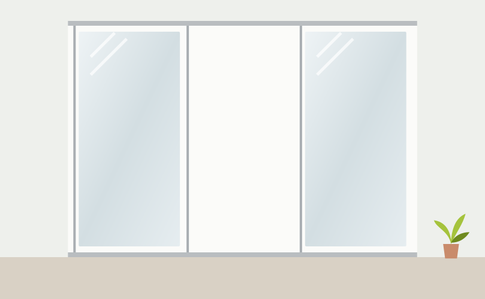
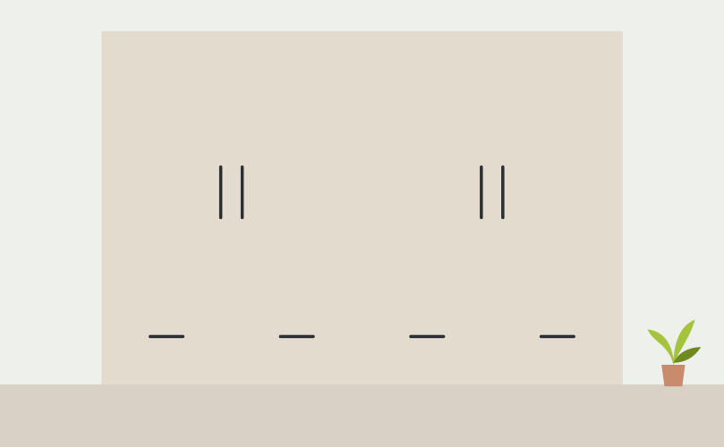

Главная / Шкафы и гардеробные на заказ
Шкафы и гардеробные на заказ в Калининграде
Шкафы-купе, распашные и встроенные шкафы, гардеробные системы и прихожие – по размерам вашей ниши или комнаты. Наполнение продумываем под то, что вы будете хранить.
- Купе, распашные, встроенные в нишу
- Гардеробные и прихожие
- Наполнение под ваши вещи
- Гарантия 2 года

Какие шкафы мы делаем
Шкафы-купе
Двери сдвигаются вдоль шкафа и не занимают места перед ним – удобно в узких коридорах и спальнях. Фасады – ЛДСП, зеркало или их сочетание.
Распашные шкафы
Открывают сразу всё содержимое, проще в уходе. Хороши в комнатах, где перед шкафом есть место для дверей.
Встроенные шкафы
Занимают нишу от пола до потолка и от стены до стены: никаких щелей и пыльных зазоров над шкафом.
Гардеробные
Открытые системы с полками, штангами и ящиками – в отдельной комнате или в углу спальни.
Примеры решений
Практичные решения в среднем ценовом сегменте. Нажмите на пример – посчитаем похожий под ваши размеры.



От чего зависит цена шкафа
- РазмерШирина и высота шкафа – главное, что влияет на цену.
- Тип дверейКупе, распашные или без дверей – для гардеробной.
- ФасадыЛДСП, МДФ, зеркало, стекло – и их сочетания.
- НаполнениеПолки, штанги, пантографы, выдвижные ящики, обувницы, корзины – подбираем под ваши вещи.
Как мы работаем
- Замерс образцами фасадов и столешниц
- Проектпо вашим размерам, в 3D
- Договорспецификация и предоплата
- Изготовлениеот 6 недель
- Монтажсвоей бригадой, после полной оплаты
- Приёмкапо акту, гарантия 2 года
Без салона – не закладываем аренду в цену. Чего обычно боятся – и что мы делаем →
Сколько будет стоить
Ответьте на несколько вопросов – покажем ориентир по цене и пришлём точный расчёт в мессенджер.
- ⏱5–7 вопросовбез регистрации и звонков, если вы их не хотите
- 🎨Образцы на замерепривезём фасады и столешницы – выберете цвет у себя дома
- 🖥Проект по видеосвязисозвонимся в MAX и покажем 3D-проект на экране
Частые вопросы
Что лучше – шкаф-купе или распашной?
Купе экономит место перед шкафом – его двери едут вдоль фасада. Распашной открывает всё содержимое сразу. В узком коридоре обычно выигрывает купе, в просторной спальне – по вкусу.
Можно ли сделать шкаф до потолка?
Да, встроенный шкаф от пола до потолка – одно из главных преимуществ мебели на заказ. На замере проверим высоту потолка в нескольких точках.
Сколько делается шкаф?
Изготовление – от 6 недель, точный срок зависит от проекта и прописывается в договоре.
Какая гарантия?
2 года с даты подписания акта приёмки.
Вы работаете по области?
Да, по Калининграду и Калининградской области.
Остались вопросы?
Позвоните или напишите – подскажем, даже если вы ещё не решили, заказывать ли у нас.